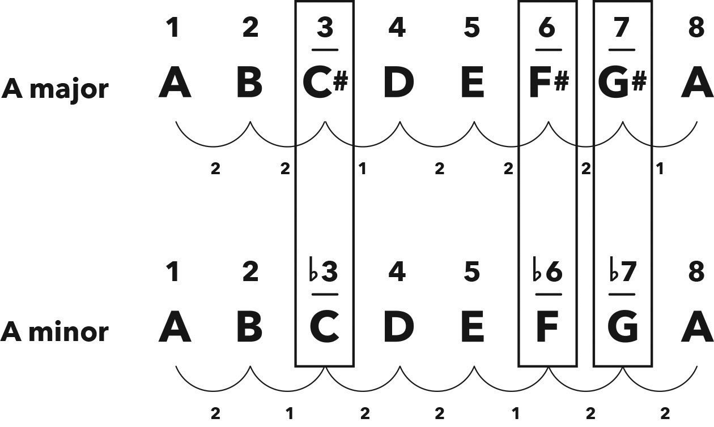

Difference Between Major & Minor Scales 大调与小调的区别
Hack
‘Happy’ major scales and ‘sad’ minor scales share four notes (1 2 4 5), while the other three notes (3 6 7) are different.
“快乐”的大调音阶和“悲伤”的小调音阶共有四个相同的音符（1 2 4 5），而另外三个音符（3 6 7）不同。
The reason for these scales’ opposite emotions must therefore lie within these three different notes.
因此，这些音阶情感相反的原因就在于这三个不同的音符。
The 3rd, 6th and 7th notes are one semitone lower in natural minor scales than they are in major scales.
在自然小调中，第 3、第 6 和第 7 个音符比大调中的对应音符低一个半音。
To represent this one semitone down, we add a flat (♭) to their spelling.
为了表示这个低一个半音的变化，我们在它们的拼写中加上一个降号（♭）。
By their spelling, these flats tell us that their associated notes are one semitone down from where they are in a major scale.
通过拼写，这些降号指出这些关联的音符比大调音阶中的位置低一个半音。
They don’t tell us that the notes (i.e. letters) themselves are flats, like in A minor (below) where the ♭3 is C, a natural note.
它们并不意味着这些音符（即字母）本身是降号，比如在 A 小调中（如下所示），降三音是 C，这是一个自然音。

Figure 8.1 Comparison of A major scale to A natural minor scale
图 8.1 A 大调音阶与 A 自然小调音阶的比较
| Major scale 大调 | 1 | 2 | 3 | 4 | 5 | 6 | 7 | 8 |
| Natural minor scale 自然小调 | 1 | 2 | ♭3 | 4 | 5 | ♭6 | ♭7 | 8 |
Figure 8.2 Comparison of major and natural minor scale spellings
图 8.2 大调与自然小调的音符拼写比较
All major scales have the same underlying semitone formula and therefore the same spelling, and all natural minor scales have the same formula and spelling.
所有大调都有相同的半音公式，因此音符拼写相同；所有自然小调也有相同的公式和拼写。
Remember, we write spellings and notes the way we say them.
请记住，我们按发音写音符和拼写。
For example, flat three is written as ♭3 (sign before number), and F sharp is written as F♯ (sign after letter).
例如，降三音写作 ♭3（符号在数字前），F 升写作 F♯（符号在字母后）。
Chapter
I know you’ve already read the title of this chapter and answered: Major scales sound happy and minor scales sound sad, done deal, next chapter please.
我知道你已经读了这一章的标题，并回答：大调听起来快乐，小调听起来悲伤，搞定了，请看下一章吧。
You are correct, congrats!
你答对了，恭喜你！
But before we move on, I’m going to briefly whisk you away on a nostalgic detour.
但在我们继续之前，我会带你稍微走一段怀旧的弯路。
Ready?
准备好了吗？
Remember when we were kids, what our favourite follow-up question to every question we ever asked was?
还记得我们小时候每次问问题后最喜欢的后续问题是什么吗？
Of course, it was “why?” This one syllable would simultaneously empower our learning about the world while providing endless amusement as we watched adults squirm through ‘explanations’ of things they didn’t understand themselves.
当然，是“为什么？”这个单音节词既能让我们了解世界，同时也能在看到大人们挣扎着解释自己都不理解的事物时，给我们带来无尽乐趣。
Why is the sky blue?
天空为什么是蓝色的？
Why did Milli Vanilli win a Grammy for lip-syncing?
米利·凡利为什么因为假唱赢得了格莱美奖？
Why does the paradox encountered in quantum entanglement work?
量子纠缠中遇到的悖论是怎么运作的？
You know, just the usual kid stuff.
你懂的，这就是孩子们关心的通常问题。
It’s heartbreaking how our wonder dissolves into indifference as we grow older.
令人难过的是，随着我们长大，我们对世界的好奇心逐渐消失，变得冷漠。
I’ll never forget the time many years ago when I stopped my car at a pedestrian crossing to let a father and son cross the road.
我永远不会忘记多年前的一次，我在一个人行横道停车让一对父子过马路。
As they walked in front of me I was struck by the shockingly vast divide between the adult and the child.
当他们在我面前走过时，我震惊于大人与孩子之间的巨大差距。
The dad’s gaze was firmly fixed on the ground with the weight of the world on his shoulders, while the child skipped along fuelled by inquisitiveness as he peered up at the infinite possibilities of the world.
父亲的目光牢牢地盯着地面，肩上似乎承载着全世界的重担，而孩子则带着强烈的好奇心蹦跳着，仰望着世界的无限可能。
Please, let’s regularly remind ourselves to reconnect with our inquisitive younger selves, as that’s the most effective and fun way to learn and live.
请我们时常提醒自己，与我们充满好奇心的年轻自我重新连接，因为这是一种最有效也最有趣的学习和生活方式。
I always make a deal with my students in their very first theory lesson: if they ever ask why something is the way it is or why it’s relevant, and I can’t explain, then they don’t have to learn it.
我总是在学生的第一堂理论课上与他们达成一个协议：如果他们问为什么某样东西是那样，或者为什么它重要，而我不能解释清楚，那么他们就不用学习它。
This keeps us all on our toes.
这让我们都保持警惕。
Be warned, though: I’ve never lost.
不过请注意：我从未输过。
A little bragging about this fact always helps to motivate my students to be even more curious, if only to be able to say they beat me and claim the prize as the first person ever to win this challenge.
稍微吹嘘一下这个事实总能激励我的学生们更加好奇，即使只是为了能够说他们打败了我并赢得了这个挑战的奖励。
Now that you’re in touch with your inner why-kid, I guess you’re thinking: I can hear that majors are happy and minors are sad, but why?
现在你已经联系上了你内心的“为什么小孩”，我猜你在想：我能听出来大调听起来快乐，小调听起来悲伤，但为什么呢？
The best way to discover the differences between major and minor scales is to put them side by side and compare their notes.
发现大调和小调之间区别的最好方法是把它们并排放置并比较它们的音符。
Let’s do this with A major and A minor.
让我们用 A 大调和 A 小调来做这个练习。
As you can see below, there are four notes that are the same (1 2 4 5) and three notes that are different (3 6 7).
如下所示，有四个音符是相同的（1 2 4 5），有三个音符不同（3 6 7）。
The 3rd note in A major is C♯ and the 3rd note in A minor is C, which means the 3rd note in a minor scale is one semitone lower than the 3rd note in a major scale.
A 大调中的第三个音是 C♯，而 A 小调中的第三个音是 C，这意味着小调中的第三个音比大调中的第三个音低一个半音。
To show this we add a flat (♭), which represents one semitone down, to the spelling of the 3rd note in minor scales (i.e. ♭3).
为了表示这一点，我们在小调中的第三个音符拼写中添加一个降号（♭），即 ♭3。
The same thing happens with the 6th and 7th notes in natural minor scales, as they’re also one semitone lower than their major counterparts.
同样的情况也发生在自然小调的第六和第七音符上，因为它们也比对应的大调音符低一个半音。
As all major scales have the same formula, and all natural minor scales have the same formula, the differences we have found between A major and A minor are the same for every major and natural minor scale.
由于所有大调具有相同的公式，所有自然小调音阶也具有相同的公式，因此我们发现 A 大调和 A 小调之间的差异对每个大调和自然小调音阶都是相同的。
We can conclude by saying the spelling of all natural minor scales is: 1 2 ♭3 4 5 ♭6 ♭7 8, where the flats tell us that those notes are one semitone down from where they are in major scales.
我们可以得出结论，所有自然小调音阶的音符拼写为：1 2 ♭3 4 5 ♭6 ♭7 8，其中的降号表示这些音符比大调音阶中的音符低一个半音。
But whyyyyy???
但是为什么呀???